Chapter 4 FROC data format
4.1 Introduction
- In the free-response ROC (FROC) paradigm (Bunch et al. 1978) the observer’s task is to:
- mark (i.e., indicate the location of) and
- rate (i.e., assign an ordered label representing the degree of suspicion) regions in the image that are perceived as suspicious for presence of disease.
- Accordingly, FROC data consists of mark-rating pairs, where each mark indicates a region7 that was considered suspicious for presence of a localized lesion and the rating is the corresponding confidence level.
- The number of mark-rating pairs on any particular case is a-priori unpredictable. It is a non-negative random integer (i.e., 0, 1, 2, …) that depends on the case, the reader and the modality. The relatively unstructured nature of FROC data makes FROC paradigm data seemingly more difficult to analyze than ROC paradigm data.8
- By adopting a proximity criterion, each mark is classified by the investigator as a lesion localization (LL) - if it is close to a real lesion - or a non-lesion localization (NL) otherwise.
- The rating can be an integer or quasi- continuous (e.g., 0 – 100), or a floating point value, as long as higher numbers represent greater confidence in presence of one or more lesions in the ROI.9
- For human observer studies a 4 or 5-point rating scale is recommended:
- 1: Very low, but finite possibility that the region is diseased.
- 2: Low possibility that the region is diseased.
- 3: Moderate possibility that the region is diseased.
- 4: High possibility that the region is diseased.
- 5: Very high possibility that the region is diseased.
- The actual adjectives used to describe the labels are unimportant. What is important is the ordering of the labels and that the observer holds them relatively constant for the duration of the study. More allowed ratings, provided the observer can work with them, leads to greater definition of the relevant empirical operating curves (to be introduced later).
- With algorithmic readers, e.g., computer aided detection (CAD) algorithms, a floating point rating, if possible, should be retained.
- In the most common study design, termed multiple-reader multiple-case (MRMC), the rating collection procedure is repeated for all cases, treatments and readers.
4.2 An actual MRMC FROC dataset
An actual MRMC FROC dataset is included as dataset04 (Zanca et al. 2009). It has the following structure:
str(dataset04)
#> List of 8
#> $ NL : num [1:5, 1:4, 1:200, 1:7] -Inf -Inf 1 -Inf -Inf ...
#> $ LL : num [1:5, 1:4, 1:100, 1:3] 4 5 4 5 4 3 5 4 4 3 ...
#> $ lesionNum : int [1:100] 1 1 1 1 1 1 1 1 1 1 ...
#> $ lesionID : num [1:100, 1:3] 1 1 1 1 1 1 1 1 1 1 ...
#> $ lesionWeight: num [1:100, 1:3] 1 1 1 1 1 1 1 1 1 1 ...
#> $ dataType : chr "FROC"
#> $ modalityID : Named chr [1:5] "1" "2" "3" "4" ...
#> ..- attr(*, "names")= chr [1:5] "1" "2" "3" "4" ...
#> $ readerID : Named chr [1:4] "1" "3" "4" "5"
#> ..- attr(*, "names")= chr [1:4] "1" "3" "4" "5"The dataset structure is a list variable with 8 members.
4.2.1 The NL aand LL list members
- Ratings of actually non-diseased regions are stored in the
NLlist member. - Ratings of actually diseased regions are stored in the
LLlist member. dataset04corresponds to 5-treatments and 4-readers (the lengths of the first and second dimensions, respectively, of theNLandLLarrays).
4.2.2 The lesionNum list member
- The
lesionNumlist member is an array of length 100 filled with integers ranging from 1 to 3, the latter being the maximum number of actual lesions per case indataset04. The length of this array equals the number of diseased cases, 100 in the current example. The contents oflesionNumare shown below:
dataset04$lesionNum[1:20]
#> [1] 1 1 1 1 1 1 1 1 1 1 1 1 1 1 1 1 1 1 1 1
dataset04$lesionNum[21:40]
#> [1] 1 1 1 1 1 1 1 1 1 1 1 1 1 1 1 1 1 1 1 1
dataset04$lesionNum[41:60]
#> [1] 1 1 1 1 1 1 1 1 1 1 1 1 1 1 1 2 2 1 1 2
dataset04$lesionNum[61:80]
#> [1] 1 1 1 1 1 1 1 1 2 2 1 1 1 2 2 2 2 2 2 1
dataset04$lesionNum[81:100]
#> [1] 2 2 2 2 3 2 2 2 2 2 3 3 3 3 3 3 3 3 3 3- The above entries tell us that while most cases contain only one lesion each, some contain 2 or even 3 lesions per case.
4.2.3 The lesionID list member
- The
lesionIDlist member is a[100 x 3]array. - Essentially it establishes a way of distinguishing between different lesions on a case by naming them, or what amounts to the same thing, by labeling them.
- The problem of distinguishing between different lesions on a case is peculiar to the FROC paradigm. With only one conceptual lesion per diseased case, the ROC paradigm does not face this problem.
- The second dimension of this array indicates that there is at least one diseased case with three lesions.
dataset04$lesionID[1:10,]
#> [,1] [,2] [,3]
#> [1,] 1 -Inf -Inf
#> [2,] 1 -Inf -Inf
#> [3,] 1 -Inf -Inf
#> [4,] 1 -Inf -Inf
#> [5,] 1 -Inf -Inf
#> [6,] 1 -Inf -Inf
#> [7,] 1 -Inf -Inf
#> [8,] 1 -Inf -Inf
#> [9,] 1 -Inf -Inf
#> [10,] 1 -Inf -Inf- This indicates that the first ten diseased cases contain one lesion each.
- The lesion on case 1 is labeled by the value 1. The
-Infdenote missing values. Since there is only one lesion, the placeholders for the second or third lesion (not present on this case, but needed to hold lesion labels in other cases) need to be filled with negative infinites. - The following example may help clarify this point.
dataset04$lesionID[90:100,]
#> [,1] [,2] [,3]
#> [1,] 1 2 -Inf
#> [2,] 1 2 3
#> [3,] 1 2 3
#> [4,] 1 2 3
#> [5,] 1 2 3
#> [6,] 1 2 3
#> [7,] 1 2 3
#> [8,] 1 2 3
#> [9,] 1 2 3
#> [10,] 1 2 3
#> [11,] 1 2 3- Diseased case 90 has two lesions, labeled 1 and 2 respectively.
- The key point is this: each lesion on a case has a distinct name. Just as each case has to have a distinct name (i.e., label), each lesion within a (diseased) case has to have a distinct name.
- When an observer assigns a rating to a particular lesion on a casee, the experimenter needs to record this information correctly.
- For example, if the lesion with
lesionID = 1is marked and rated a particular value, this value needs to be entered in the spread-sheet as belonging to the lesion namedlesionID = 1. - The
TP/LLworksheet has alesionIDcolumn.10 - The distinction implied by different
lesionIDvalues is important if the lesion weights are unequal.11
4.2.4 The LesionWeight list member
- The
LesionWeightlist member is also a[100 x 3]array filled with values that add up to unity for each case. The meaning of lesion weights is dicussed in here: (Chakraborty and Berbaum 2004; Chakraborty and Yoon 2009; Chakraborty 2017) - Briefly, the lesion weights are the clinical importance of detecting the lesion.
- As an example, a highly visible lesion might have low clinical significance if it is likely to be benign, and it would be characterized by a lower weight than a less visible but more deadly lesion on the same case.
- In order to give each case equal importance, the weights must sum to one.
- In the current example, see below, the lesions are equally weighted.
- The choice of weights is a clinical consideration, determined by the costs and benefits of missing or finding the lesion. Lacking this information, which is the most common scenario, it makes sense to weight the lesions equally.
- On a case one one lesion,
lesionWeight = 1, and the other lesionWeights are assigned negative infinity values. - On a case with two lesions,
lesionWeight = 0.5for the first two lesions, and the third weight is assigned the negative infinity value. - On a case with three lesions,
lesionWeight = 0.3333for the lesions. - Rather than assign these values manually, set the Weight column of the Truth worksheet to zeroes. Then the software automatically assigns equal weights when the Excel sheet is read.
dataset04$lesionWeight[1:20,]
#> [,1] [,2] [,3]
#> [1,] 1 -Inf -Inf
#> [2,] 1 -Inf -Inf
#> [3,] 1 -Inf -Inf
#> [4,] 1 -Inf -Inf
#> [5,] 1 -Inf -Inf
#> [6,] 1 -Inf -Inf
#> [7,] 1 -Inf -Inf
#> [8,] 1 -Inf -Inf
#> [9,] 1 -Inf -Inf
#> [10,] 1 -Inf -Inf
#> [11,] 1 -Inf -Inf
#> [12,] 1 -Inf -Inf
#> [13,] 1 -Inf -Inf
#> [14,] 1 -Inf -Inf
#> [15,] 1 -Inf -Inf
#> [16,] 1 -Inf -Inf
#> [17,] 1 -Inf -Inf
#> [18,] 1 -Inf -Inf
#> [19,] 1 -Inf -Inf
#> [20,] 1 -Inf -Inf
dataset04$lesionWeight[21:40,]
#> [,1] [,2] [,3]
#> [1,] 1 -Inf -Inf
#> [2,] 1 -Inf -Inf
#> [3,] 1 -Inf -Inf
#> [4,] 1 -Inf -Inf
#> [5,] 1 -Inf -Inf
#> [6,] 1 -Inf -Inf
#> [7,] 1 -Inf -Inf
#> [8,] 1 -Inf -Inf
#> [9,] 1 -Inf -Inf
#> [10,] 1 -Inf -Inf
#> [11,] 1 -Inf -Inf
#> [12,] 1 -Inf -Inf
#> [13,] 1 -Inf -Inf
#> [14,] 1 -Inf -Inf
#> [15,] 1 -Inf -Inf
#> [16,] 1 -Inf -Inf
#> [17,] 1 -Inf -Inf
#> [18,] 1 -Inf -Inf
#> [19,] 1 -Inf -Inf
#> [20,] 1 -Inf -Inf
dataset04$lesionWeight[41:60,]
#> [,1] [,2] [,3]
#> [1,] 1.0 -Inf -Inf
#> [2,] 1.0 -Inf -Inf
#> [3,] 1.0 -Inf -Inf
#> [4,] 1.0 -Inf -Inf
#> [5,] 1.0 -Inf -Inf
#> [6,] 1.0 -Inf -Inf
#> [7,] 1.0 -Inf -Inf
#> [8,] 1.0 -Inf -Inf
#> [9,] 1.0 -Inf -Inf
#> [10,] 1.0 -Inf -Inf
#> [11,] 1.0 -Inf -Inf
#> [12,] 1.0 -Inf -Inf
#> [13,] 1.0 -Inf -Inf
#> [14,] 1.0 -Inf -Inf
#> [15,] 1.0 -Inf -Inf
#> [16,] 0.5 0.5 -Inf
#> [17,] 0.5 0.5 -Inf
#> [18,] 1.0 -Inf -Inf
#> [19,] 1.0 -Inf -Inf
#> [20,] 0.5 0.5 -Inf
dataset04$lesionWeight[61:80,]
#> [,1] [,2] [,3]
#> [1,] 1.0 -Inf -Inf
#> [2,] 1.0 -Inf -Inf
#> [3,] 1.0 -Inf -Inf
#> [4,] 1.0 -Inf -Inf
#> [5,] 1.0 -Inf -Inf
#> [6,] 1.0 -Inf -Inf
#> [7,] 1.0 -Inf -Inf
#> [8,] 1.0 -Inf -Inf
#> [9,] 0.5 0.5 -Inf
#> [10,] 0.5 0.5 -Inf
#> [11,] 1.0 -Inf -Inf
#> [12,] 1.0 -Inf -Inf
#> [13,] 1.0 -Inf -Inf
#> [14,] 0.5 0.5 -Inf
#> [15,] 0.5 0.5 -Inf
#> [16,] 0.5 0.5 -Inf
#> [17,] 0.5 0.5 -Inf
#> [18,] 0.5 0.5 -Inf
#> [19,] 0.5 0.5 -Inf
#> [20,] 1.0 -Inf -Inf
dataset04$lesionWeight[81:100,]
#> [,1] [,2] [,3]
#> [1,] 0.5000000 0.5000000 -Inf
#> [2,] 0.5000000 0.5000000 -Inf
#> [3,] 0.5000000 0.5000000 -Inf
#> [4,] 0.5000000 0.5000000 -Inf
#> [5,] 0.3333333 0.3333333 0.3333333
#> [6,] 0.5000000 0.5000000 -Inf
#> [7,] 0.5000000 0.5000000 -Inf
#> [8,] 0.5000000 0.5000000 -Inf
#> [9,] 0.5000000 0.5000000 -Inf
#> [10,] 0.5000000 0.5000000 -Inf
#> [11,] 0.3333333 0.3333333 0.3333333
#> [12,] 0.3333333 0.3333333 0.3333333
#> [13,] 0.3333333 0.3333333 0.3333333
#> [14,] 0.3333333 0.3333333 0.3333333
#> [15,] 0.3333333 0.3333333 0.3333333
#> [16,] 0.3333333 0.3333333 0.3333333
#> [17,] 0.3333333 0.3333333 0.3333333
#> [18,] 0.3333333 0.3333333 0.3333333
#> [19,] 0.3333333 0.3333333 0.3333333
#> [20,] 0.3333333 0.3333333 0.33333334.2.5 The dataType list member
- The
dataTypelist member equals the string"FROC", identifyingdataset04as an FROC dataset.
Examination of the output reveals that:
- Location-level ratings of non-diseased regions are stored in the
NLlist member. - Location-level ratings of diseased regions are stored in the
LLlist member.
4.2.6 Details of the modalityID and readerID list members
- The names of the treatments are in the
modalityIDlist member:
For example, the name of the second treatment is
"2". The names can be longer strings, but use of very long string names may mess up the output formats of the analysis report.The names of the readers are in the
readerIDarray:
For example, the name of the second reader is "3". Apparently reader "2" “dropped out” of the study. A similar caveat regarding long reader names applies.
4.2.7 Details of the NL and LL list members
- For either
NLorLLlist members, the fourth dimension can have length greater than unity. - For the
NLlist member this length is determined by the treatment-reader-case combination yielding the mostNLmarks per case. - For the
LLlist member this length is determined by the case with the most true lesions. dataset02is a 2-treatment 5-reader dataset (the lengths of the first and second dimensions, respectively, of theNLandLLlist members).
4.2.8 Numbers of non-diseased and diseased cases
- The third dimension of the
NLarray is the total number of all cases, i.e., 200, and the third dimension of theLLarray, i.e., 100, is the total number of diseased cases. - Subtracting the number of diseased cases from the number of all cases yields the number of non-diseased cases.
- Therefore, in this dataset, there are 100 diseased cases and 100 non-diseased cases.
4.2.9 Why dimension the NL array for the total number of cases?
- Because, in addition to
LLs,NLsare possible on diseased cases. - Only
LLsare possible on diseased cases. - Only
NLsare possible on non-diseased cases. - The missing values are filled in with
-Inf.
4.2.10 Ratings on a non-diseased case
- For treatment 1, reader 1 and case 1 (the first non-diseased case), the NL ratings are:
4.2.10.1 The meaning of a negative infinity rating
- Obviously, a real rating cannot be negative infinity.12 This value is reserved for missing ratings, and more generally, missing marks.13 For example, since all values in the above code chunk are negative infinities, this means this treatment-reader-case combination did not yield any mark-rating pairs. This possibility, alluded to above, is only possible with FROC data. All other paradigms (ROC, LROC and ROI) yield at least one rating per case.
- The length of the fourth dimension of the
NLarray is determined by that treatment-reader-case combination yielding the maximum number ofNLs. Consider the following chunk:
for (i in 1:5)
for (j in 1:4)
for (k in 1:200)
if (all(dataset04$NL[i,j,k,] != -Inf))
cat(i, j, k, all(dataset04$NL[i,j,k,] != -Inf),"\n")
#> 5 4 192 TRUE- This shows that the fourth dimension of the
NLarray has to be of length 7 because one, and only reader, specifically reader “4”, made 7NLmarks on a diseased case in treatment “5”!
4.2.10.2 Ratings on a diseased case
Unlike non-diseased cases, diseased cases can have both NL and LL ratings.
- For treatment 1, reader 1, case 51 (the 1st diseased case) the NL ratings are:
dataset04$NL[1,1,51,]
#> [1] -Inf -Inf -Inf -Inf -Inf -Inf -Inf
dataset04$lesionNum[1]
#> [1] 1
dataset04$LL[1,1,1,]
#> [1] 4 -Inf -Inf
mean(is.finite(dataset04$LL))
#> [1] 0.3043333. There are only two finite values because this case has two ROI-level-abnormal regions, and 2 plus 2 makes for the assumed 4-regions per case. The corresponding $lesionNum field is 1.
mean(is.finite(dataset04$NL[,,1:50,]))
#> [1] 0.05942857
dataset04$NL[1,1,51,]
#> [1] -Inf -Inf -Inf -Inf -Inf -Inf -Inf
dataset04$lesionNum[1]
#> [1] 1
dataset04$LL[1,1,1,]
#> [1] 4 -Inf -Inf
mean(is.finite(dataset04$LL))
#> [1] 0.3043333mean(is.finite(dataset04$NL[,,1:50,]))
#> [1] 0.05942857
dataset04$NL[1,1,51,]
#> [1] -Inf -Inf -Inf -Inf -Inf -Inf -Inf
dataset04$lesionNum[1]
#> [1] 1
dataset04$LL[1,1,1,]
#> [1] 4 -Inf -Inf
mean(is.finite(dataset04$LL))
#> [1] 0.3043333- The ratings of the 2
LLson this case are 4. The mean rating over allLLs(in all treatments and readers) is 3.6785323.
4.3 The FROC Excel data input file
- An Excel file in JAFROC format containing FROC data corresponding to
dataset04is included with the RJafroc package (Zanca et al. 2009).
fileName <- system.file(
"extdata", "includedFrocData.xlsx", package = "RJafroc", mustWork = TRUE)
ds <- DfReadDataFile(fileName)
ds$dataType
#> [1] "FROC"- On my Mac, the file name is huge:
- /Library/Frameworks/R.framework/Versions/3.6/Resources/library/RJafroc/extdata/includedFrocData.xlsx.
- Use the following code to make a duplicate of the Excel file in a more convenient location.
DfSaveDataFile(dataset04, "MyDataset04.xlsx", format = "JAFROC")
#> Note: zip::zip() is deprecated, please use zip::zipr() insteadThe structure of the Excel file is superficially similar to the ROC Excel file considered in the previous chapter. However, there are several important differences noted below in bold.
- The
Truthworksheet defines the ground-truth of each case. It indicates which cases are diseased and which are non-diseased. For diseased cases, it additionally indicates the number of lesions, and the weight to be assigned to each lesion. - The
FPworksheet lists the number (zero or more) and ratings ofNLmarks on non-diseased and diseased cases. - The
TPworksheet lists the number (zero or more) and ratings ofLLmarks, i.e., marked lesions, on diseased cases. Obviously,LLmarks cannot occcur on non-diseased cases.
- The
4.3.1 The Truth worksheet
- The
CaseIDcolumn lists the numeric labels identifying each case. Again, string names are possible, but keep them short. - A
1, or more, in theLesionIDcolumn denotes a diseased case. - A
0in theLesionIDcolumn denotes a non-diseased case. - The
Weightcolumn is relevant for FROC data. - The contents of the
Truthworksheet corresponding todataset04are displayed next:
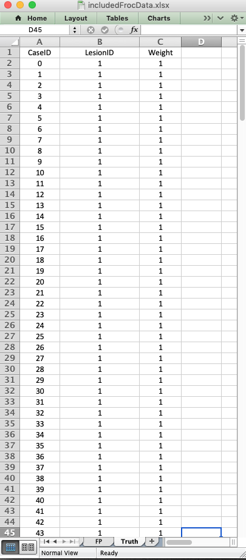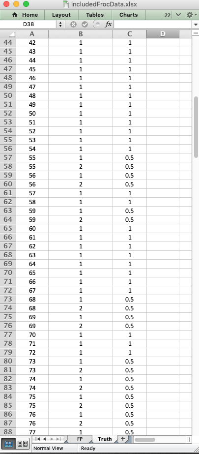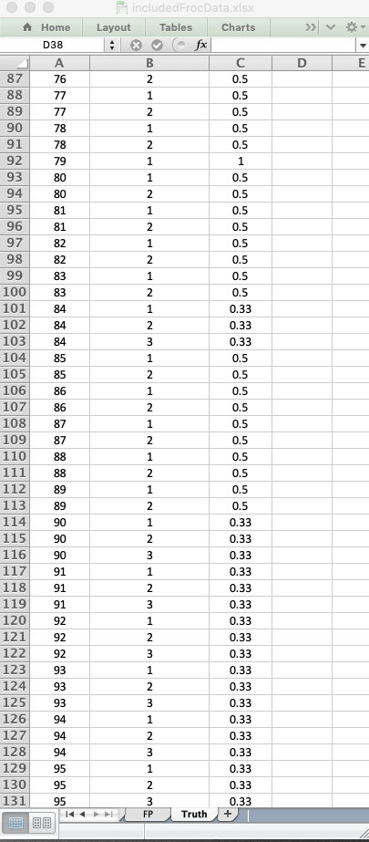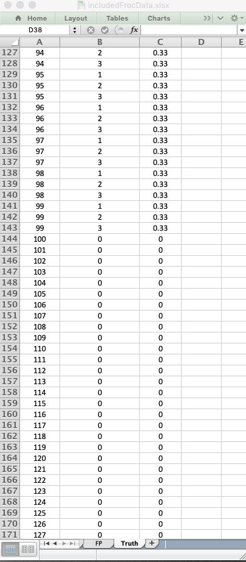
- There are 100 diseased cases (labeled 0-99) under column
CaseIDand 100 non-diseased cases (labeled 100-199).14
- The
LesionIDfield for each non-diseased case is zero and there is one row per case for such cases. For diseased cases, this field has one or more entries, ranging from 1 to 3 for this particular dataset. In other words, for each diseased case, the number of rows equals the number of lesion on the case. - As an example, cases labeled
0 - 54(and other cases like60 - 67, etc.) have single lesions each, withLesionID= 1 andWeight= 1 have one row per case in the worksheet. - As another example, there are two rows for
CaseID= 77: one withLesionID= 1 (labeling the first lesion on this case) and one withLesionID= 2 (labeling the second and last lesion on this case). The weights of these lesions are explicitly specified as 0.5 each. - As a final example, there are three rows for
CaseID= 95: one withLesionID= 1, one withLesionID= 2 and the last withLesionID= 3. The weights of these lesions are explicitly specified to be 0.33 each.15
- Alternatively, the
Weightsfield can be set to zeroes (for all cases) to more conveniently ensure equal weighting to much higher precision. - Important: every case must have at least one row describing it in the Truth worksheet.
- The Excel files should be “robust” with respect to sorting on different columns. By “robust” I mean the resulting
Rdataset object, resulting fromDfReadDataFile, should be unchanged. I have not tested this on all files, but if someone brings deviations from this statement to my attention, I will look into it. As a simple example of “robustness”, notice that in the Truth worksheet being currently explained, the diseased cases come before the non-diseased ones.
4.3.2 The FP/NL worksheet
The following screen-shots show different parts of the FP worsheet for dataset04.
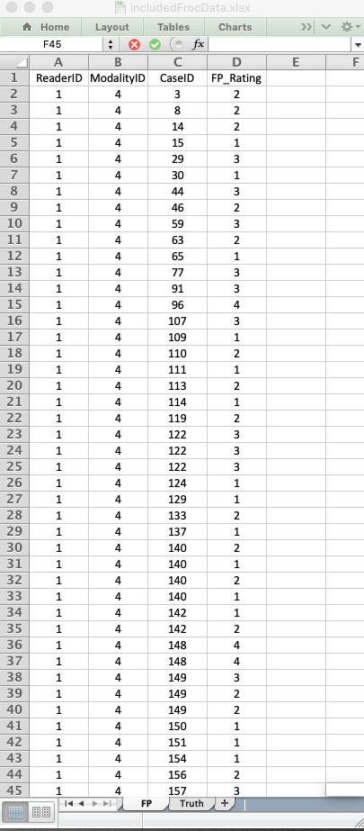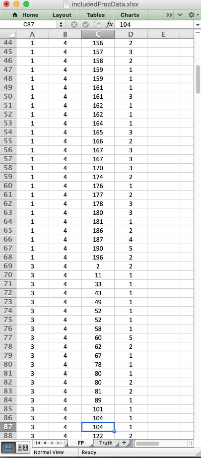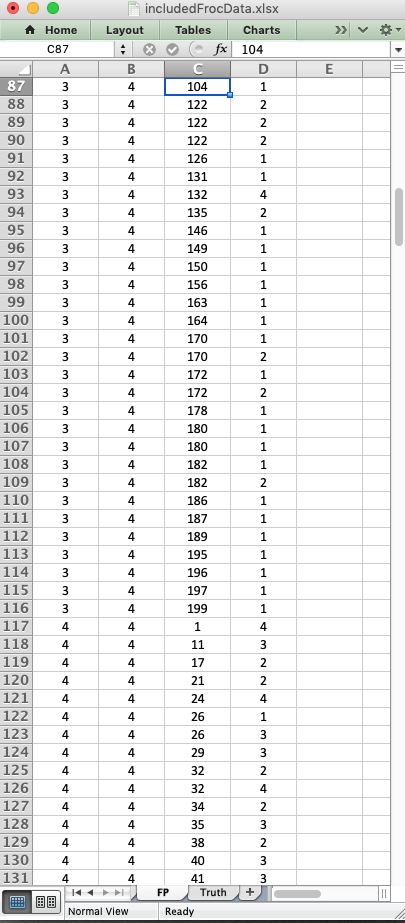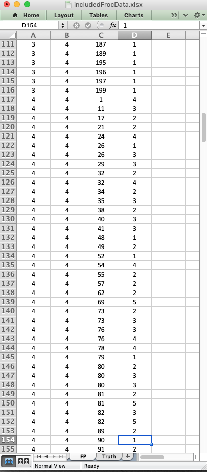
- The
FPworksheet lists the ratings ofNLson both non-diseased and diseased cases. Unlike the ROC paradigm,NLscan occur on diseased cases. Additionally, for a given treatment and reader, the number of rows per case cannot be predicted apriori. It could be 0, 1, 2, etc. While there is in principle no upper limit to the number ofNLsper case, radiologists seldom make more than one or twoNLson any case. - Note the absence of the
LesionIDfield. TheNLmarks do not correspond to real lesions, which by definition, can only occur on diseased cases. - It is possible (in principle) that the
FPworsheet is blank. The observer simplyh does not mark anyNLs. See (Chakraborty 2017) for how the FROC paradigm correctly interprets this situation as indicative of good performance.
4.3.3 The TP/LL worksheet
The following screen-shots show different parts of the TP worsheet for dataset04.
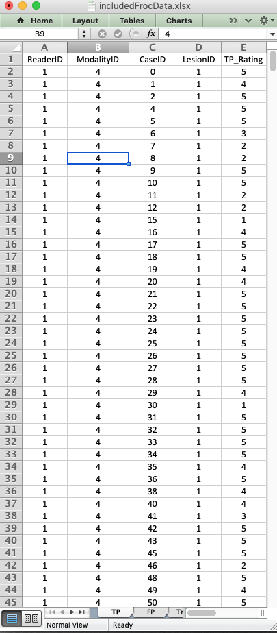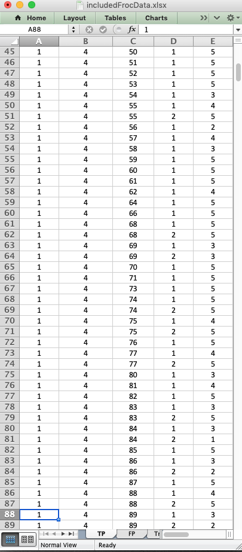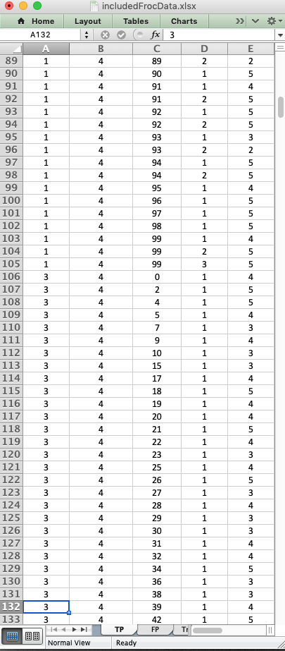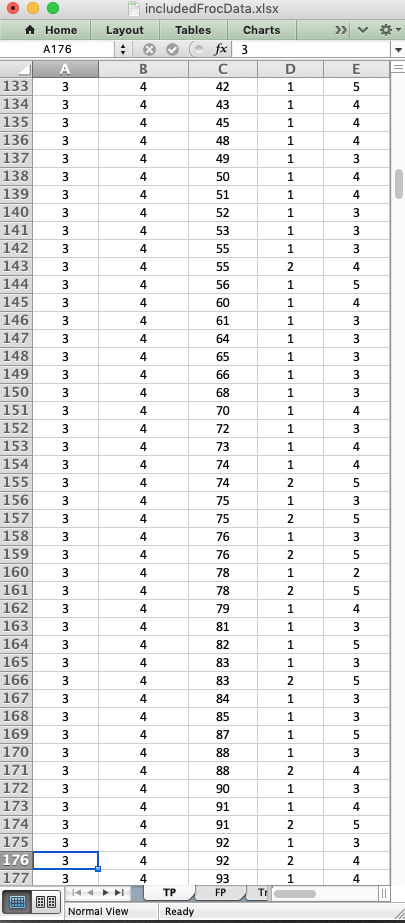
- The
TPworksheet lists the ratings ofLLson diseased cases. Only diseased cases can appear on this worksheet. Additionally, for a given treatment and reader, the number of rows per case cannot be predicted apriori. It could be 0, 1, 2, 3 (the upper limit comes from the maximum number of lesions per case in this dataset). - Note the presence of the
LesionIDfield, which essentially names the different lesions on each diseased case. - As an example, for reader 1, treatment 4, case 99, all three lesions (labeled 1, 2 and 3) are marked and rated 4, 5 and 5, respectively.
- The diseased case labeled
99in the Excel Truth sheet is actually diseased case number 100 in thedataset04$LLarray. - Remember that the diseased cases are labeled “0” thru “99”, but the array index in the dataset object runs from 1 to 100.
- As another example, for reader 1, treatment 4, case 3, there are no LL marks. The one lesion on this case went unmarked.
- Unmarked lesions are indicated by
-Inf. - It is possible (in principle) that the
TPworsheet is blank. See (Chakraborty 2017) for how the FROC paradigm correctly interprets this situation as indicative of poor performance.
4.4 Summary
TBA
References
Bunch, P. C., J. F. Hamilton, G. K. Sanderson, and A. H. Simmons. 1978. “A Free-Response Approach to the Measurement and Characterization of Radiographic-Observer Performance.” Journal Article. J of Appl Photogr. Eng. 4: 166–71.
Chakraborty, Dev P. 2017. Observer Performance Methods for Diagnostic Imaging - Foundations, Modeling, and Applications with R-Based Examples. Book. Boca Raton, FL: CRC Press.
Chakraborty, D. P., and K. S. Berbaum. 2004. “Observer Studies Involving Detection and Localization: Modeling, Analysis and Validation.” Journal Article. Med Phys 31 (8): 2313–30.
Chakraborty, D. P., and H. J. Yoon. 2009. “JAFROC Analysis Revisited: Figure-of-Merit Considerations for Human Observer Studies.” Journal Article. Proc. SPIE Medical Imaging: Image Perception, Observer Performance, and Technology Assessment 7263: 72630T.
Zanca, Federica, Jurgen Jacobs, Chantal Van Ongeval, Filip Claus, Valerie Celis, Catherine Geniets, Veerle Provost, Herman Pauwels, Guy Marchal, and Hilde Bosmans. 2009. “Evaluation of Clinical Image Processing Algorithms Used in Digital Mammography.” Journal Article. Medical Physics 36 (3): 765–75.
In order to avoid confusion with the region-of-interest or ROI-paradigm, I do not like to use the term ROI to describe the marks made by the observer.↩
I say “seemingly”, because the only real difference between ROC and FROC analyses is in the selection of the figure of merit.↩
As with the ROC paradigm, the directionaliy of the rating is not a limitation.↩
Since the ROC paradigm does not allow multiple lesions per case, each diseased case conceptually containing only one lesion, the distinction between different
lesionIDvalues on the same diseased case does not arise.↩For equally weighted lesions, the name distinction implied by
lesionIDis not important, but then the analysis would only be valid for equally weighted lesions.↩If an observer is so highly confident in the absence of a localized lesion, he will simply not mark the location in question; if he did, then, logically, he should mark all areas in the image that are definitely not lesions; in the FROC paradigm only regions with a reasonable degree of suspicion are marked. The radiologist only wishes to draw attention to regions that are reasonably suspicious; the definition of “reasonable” is determined by clinical considerations.↩
Since there is a one-to-one correspondence between marks and ratings.↩
The non-diseased cases numbered 128 - 199 are not shown above. They are similar to the ones that are shown - one row per case with a zero under the lesionID column and a zero under the Weights column.↩
The sofware performs a check to ensure that the weight sum to unity, in this case 1% error is considered close enough for “government work”!↩